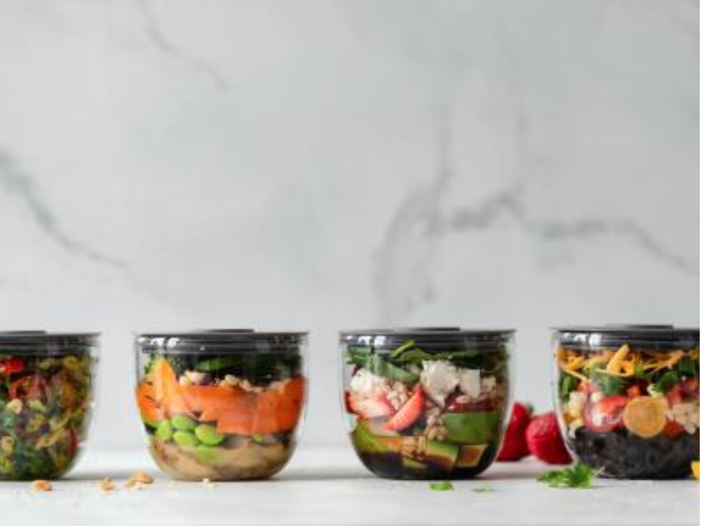
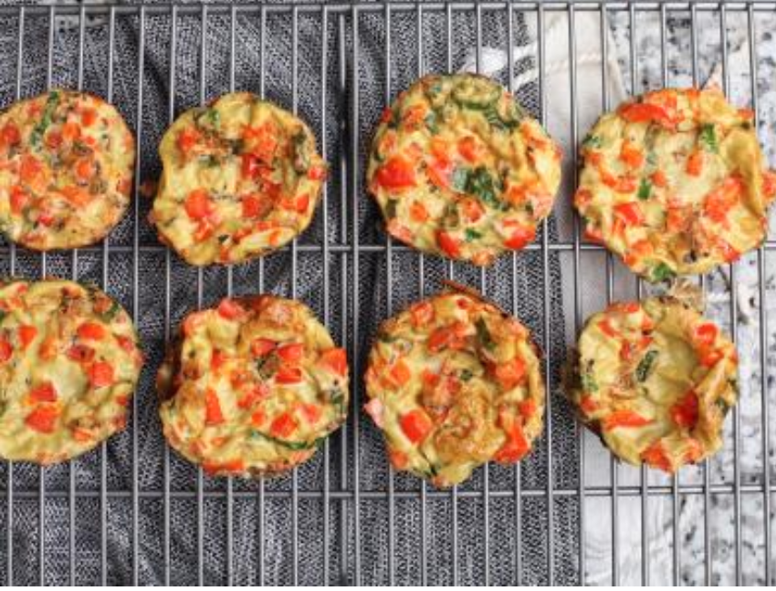
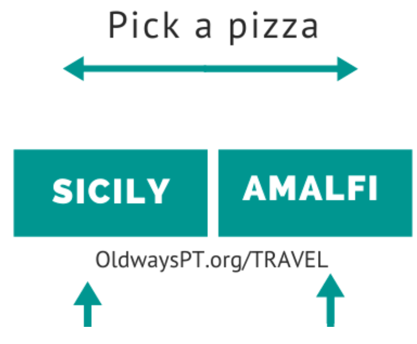

goodness
goodnessHome> Blog
BLOG
FEBRUARY 2020
FEBRUARY 24, 2020

THE HEART-HEALTHY MEDITERRANEAN DIET
Since February is American Heart Month , what better way to celebrate than with the Mediterranean Diet —the #2 best diet for cardiovascular health,..
READ MORE
FEBRUARY 18, 2020

5 COOKING LESSONS FROM 'ALL ABOUT DINNER' BY MOLLY STEVENS
“I don’t have any strict rules about what constitutes dinner,” writes Molly Stevens in her latest book, All About Dinner . “And there are times when...
READ MORE
FEBRUARY 18, 2020
MEAL PREP 101: 8 KITCHEN TOOLS TO HELP YOU PREP A WEEK OF HEALTHY MEALS
Long days at the office, after-school activities, rush hour traffic…sometimes, it feels like there are so many obstacles preventing you from cooking...
READ MORE
FEBRUARY 12, 2020
EGGS, THE MEDITERRANEAN WAY
Scrambled, sunny-side up, poached, soft-boiled, hard-boiled, over-easy, over-hard, shirred (baked with cream), etc., the humble egg is a nutritious,...
READ MORE
FEBRUARY 04, 2020
QUIZ: ARE YOU MORE SICILY OR AMALFI COAST? FIND YOUR DREAM ITALIAN VACATION
Would you rather …Tour an ancient Greek temple, or the ruins of Pompeii? Learn to make artisanal chocolate, or authentic Neapolitan pizza? Hop a...
READ MORE
Olways
266 Beacon Street Suite 1
Boston , MA 02116
TEL 617-421-5500
FAX 617-421-5511
info@oldwaysspt.org